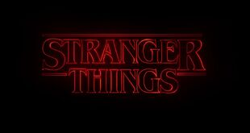
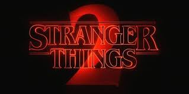
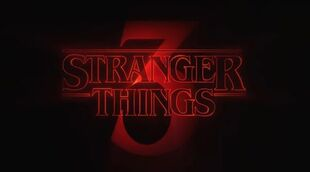

Les saison

Stranger Things 1: La première saison de Stranger Things a été créée sur Netflix le 15 Juillet 2016. Elle se compose de huit épisodes allant de quarante-deux à cinquante-cinq minutes. Situé dans la ville fictive de Hawkins, Indiana en 1983, la saison est consacrée à la disparition de Will Byers et à sa recherche par la famille, les amis et les autorités locales. Imaginé par ses créateurs comme un film à succès de huit heures, il s'inspire et rend hommage aux films de genre classiques des années 1980 - en particulier les films de Steven Spielberg et John Carpenter, ainsi que les romans de Stephen King. La saison a été acclamée par la critique et le public et a été félicitée pour sa mise en scène, ses performances d'acteur, sa séquence titre et sa partition de synthétiseur

Stranger Things 2: Stranger Things 2, la deuxième saison de l'original de Netflix Stranger Things, est sorti le 27 octobre 2017. Il se compose de neuf épisodes allant de quarante-cinq à soixante-deux minutes. Stranger Things 2 a été confirmé par Netflix le 31 août 2016 pour une sortie en 2017. Une bande annonce a révélé que la deuxième saison comprenait neuf épisodes ainsi que le titre de travail de chaque épisode. Le tournage de la saison a commencé à Atlanta, en Géorgie, le 7 novembre 2016. Situé à Hawkins à l'automne 1984, l'histoire se poursuit alors que les forces surnaturelles commencent à nouveau à affecter la ville. Alors que la saison dessert d'abord et avant tout le casting principal et les personnages de la première saison, plusieurs nouveaux personnages sont introduits: Tomboy Max et son demi-frère aîné Billy, une fille nommée Kali Prasad connectée au Laboratoire National d'Hawkins, le directeur de RadioShack Bob Newby, Département de L'agent énergétique Dr. Owens et le journaliste déshonoré devenu théoricien du complot Murray Bauman. Semblable à la saison précédente, la saison 2 a été saluée par les critiques et le public et a été félicitée pour être beaucoup plus orientée vers l'horreur.

Nous sommes en 1985 à Hawkins, dans l’Indiana, et l’été se réchauffe. L’école est terminée, il y a un tout nouveau centre commercial en ville et l’équipage Hawkins est sur le point de devenir adulte. La romance fleurit et complique la dynamique du groupe, et ils devront trouver comment grandir sans se séparer. Pendant ce temps, le danger se profile. Lorsque la ville est menacée par des ennemis anciens et nouveaux, Onze et ses amis se rappellent que le mal ne s'arrête jamais; il évolue. Désormais, ils devront s'unir pour survivre et se rappeler que l'amitié est toujours plus forte que la peur.